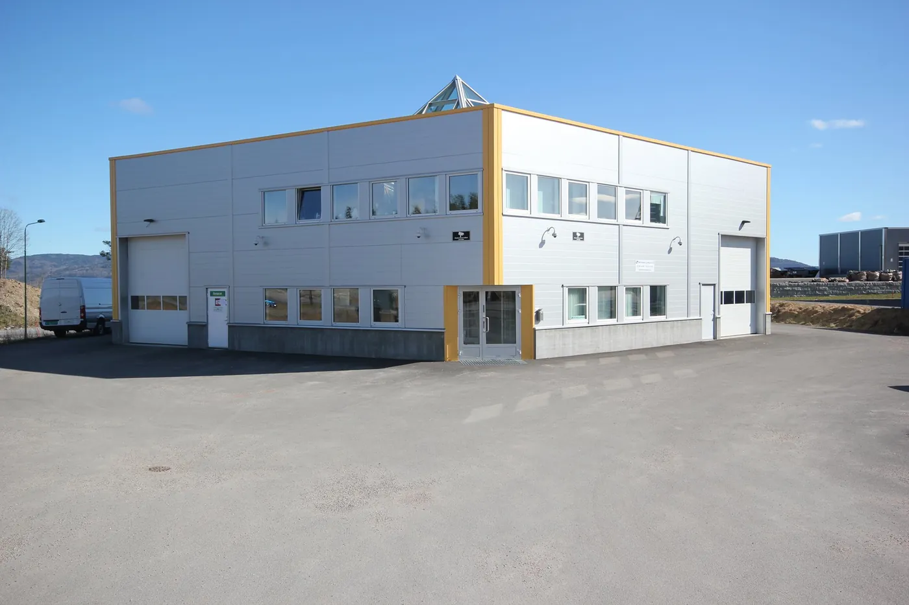

Forside/Tjenester
Tjenester
Alt innen elektro i boligen – med pris før vi starter og dokumentasjon i Boligmappa.
Elkontroll
Kontroll av el-anlegget – tryggere bolig og papirer til boligsalget.
Elbillader
Montering av elbillader tilpasset anlegget.
Varmepumpe
Montering og oppfølging av varmepumpe.
Sikringsskap
Nye og oppgraderte sikringsskap.
Utrykning
Vi rykker ut når sikringen slår ut.
Belysning
Ny belysning inne og ute.
Dokumentasjon
Alt arbeid i Boligmappa
Når arbeidet er gjort, dokumenteres det i Boligmappa. Det er nyttig når boligen skal selges.
- Dokumentasjon i Boligmappa.
- Pris før oppstart.
- Ryddig arbeid.

Hvilken tjeneste trenger du?
Ring 45 00 70 07, så avklarer vi raskt.